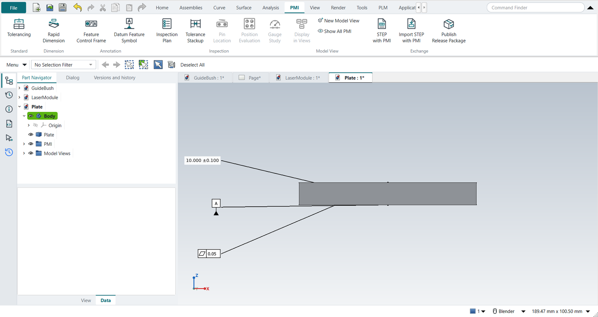
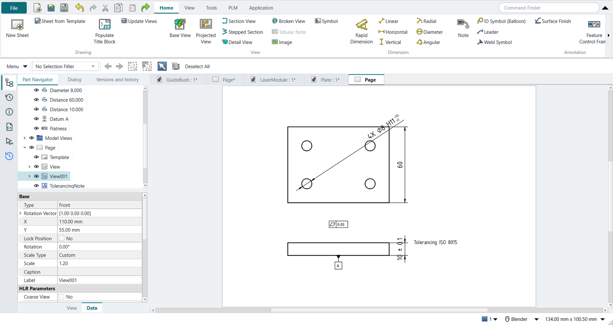

Tutorial Y: PMI in model views
| Book |
The model views of Wünsch, Pilz and Vajna, Siemens NX für Einsteiger – kurz und bündig, 4th ed., section 6.10, and Sham Tickoo, Siemens NX 12.0 for Designers, ch. 12; the plate is ours |
| You learn |
the Model Views folder, the work view (double-click), PMI in a view and in its plane, Display in Views, Show All PMI, Inherit PMI From Model View |
| Sizes |
A plate 80 × 60 × 10 with four Ø8 holes |
A part is documented in more than one direction: its hole pattern is read from above, its thickness and flatness from the front. NX keeps each in its own model view, so neither view is cluttered by the other’s annotations.
Step by step
1. The plate and its model views
The plate is made by script. PMI › Tolerancing, OK: the part gets its PMI folder and a Model Views folder with Front, Top, Right, Back, Bottom, Left, Isometric and Trimetric.
2. The Top view
Double-click Top under Model Views: it becomes the work view, and the camera looks down on the plate.
Select a hole, Rapid Dimension, class H11, quantity 4: 4X Ø8.000 H11.
Select the front and back faces, Rapid Dimension: the width 60, covered by the general tolerance.
Both go into Top, their labels in its plane.
3. The Front view
Double-click Front: Top’s two PMI disappear. Rapid Dimension on the underside and the top face, ±0.1: the thickness. Datum Feature Symbol A on the underside, Feature Control Frame flatness 0.05 on the top.

5. Display in Views
Datum A is referenced from above too. Select it, PMI › Display in Views, tick Top beside Front, OK: it now shows in both.
6. Isometric, and Show All PMI
Double-click Isometric: it has no PMI of its own, so nothing shows. Show All PMI ends the work view; all five show, each in its own view’s plane.
7. The drawing inherits from the model views
Ctrl+Shift+D, New Sheet, a top view and a front view of the plate. Select each and click Inherit PMI. Each view’s NX_InheritPMI is From Model View, so the top view gets Top’s PMI (the hole size, the width) and the front view Front’s (the thickness, datum A, the flatness). Datum A is in Top too, but the underside shows edge-on only in the front view, so it is placed there.

The replay
| # | In the book (NX) | In FreeCAD NX-Style | Result | Notes |
|---|---|---|---|---|
Y1 |
The plate: 80 x 60 x 10 with four Ø8 holes |
modelled by script (the exercise is the model views) |
differs |
volume 45989.4 mm^3 |
Y2 |
The part’s Model Views: Front, Top, Right, Back, Bottom, Left, Isometric, Trimetric |
ribbon 'PMI › Standard > Tolerancing' (ISO GPS), MB2 = OK: the PMI folder and the Model Views folder |
same |
Model Views ['Front', 'Top', 'Right', 'Back', 'Bottom', 'Left', 'Isometric', 'Trimetric']; work view None. NX’s new part has them from the start; here they come with the part’s first PMI |
Y3 |
Double-click Top in the Part Navigator: the work view |
double-click 'Top' under Model Views |
same |
the camera looks down on the plate; new PMI goes into Top |
Y4 |
Rapid Dimension on a hole: 4X Ø8 H11 |
hole selected + ribbon 'PMI › Dimension > Rapid Dimension'; 'H11' typed, quantity 4; MB2 = OK |
differs |
4X Ø8.000 H11 (+0.090/0); in view ['Top'], its label in that view’s plane |
Y5 |
Rapid Dimension: the width 60 (ISO 2768) |
front, back selected + ribbon 'PMI › Dimension > Rapid Dimension'; nothing typed; MB2 = OK |
differs |
60.000; in view ['Top'], its label in that view’s plane |
Y6 |
Double-click Front: Top’s PMI are hidden |
double-click 'Front' under Model Views |
same |
visible PMI: none |
Y7 |
Rapid Dimension: the thickness 10 ±0.1 |
bottom, top selected + ribbon 'PMI › Dimension > Rapid Dimension'; +0.1 and −0.1 typed; MB2 = OK |
differs |
10.000 ±0.100; in view ['Front'], its label in that view’s plane |
Y8 |
Datum Feature Symbol A on the underside |
bottom selected + ribbon 'PMI › Annotation > Datum Feature Symbol'; letter A; MB2 = OK |
differs |
datum feature A; in view ['Front'], its label in that view’s plane |
Y9 |
Flatness 0.05 on the top face |
top selected + ribbon 'PMI › Annotation > Feature Control Frame'; flatness, 0.05; MB2 = OK |
differs |
flatness | 0.050; in view ['Front'], its label in that view’s plane |
Y10 |
Double-click Top again: only Top’s PMI show |
double-click 'Top' |
same |
visible PMI: ['Diameter 8.000', 'Distance 60.000'] |
Y11 |
Display in Views: datum A also in Top |
datum A selected + ribbon 'PMI › Model View > Display in Views', Top ticked beside Front, MB2 = OK |
same |
datum A in ['Front', 'Top']; visible in Top: ['Datum A', 'Diameter 8.000', 'Distance 60.000']. NX: RMB > Display > in Views |
Y12 |
Isometric has no PMI of its own; Show All PMI shows every view’s |
double-click 'Isometric'; ribbon 'PMI › Model View > Show All PMI' |
differs |
Isometric shows nothing; then 5 PMI, each label in its own view’s plane. NX shows a view’s PMI only while it is the work view; Show All PMI is NXStyle’s |
Y13 |
Drafting: New Sheet, a top view and a front view |
Ctrl+Shift+D, ribbon 'New Sheet', twice 'Base View' with the plate selected |
differs |
NX makes a drawing view from a model view (Base View > Model View to Use); here the view’s direction is set to Top, then Front |
Y14 |
Inherit PMI on each view, From Model View: each gets its model view’s PMI |
each view selected + ribbon 'Drafting > Inherit PMI' (the view’s NX_InheritPMI: From Model View) |
same |
top view (from model view Top): ['Diameter 8.000', 'Distance 60.000']; front view (from model view Front): ['Datum A', 'Distance 10.000', 'Flatness']. Datum A is in Top too, but a datum on the underside shows edge-on only in the front view |
| Result | Means |
|---|---|
same |
The book’s NX steps work as written. |
differs |
It works, but the FreeCAD way is different; the notes say how. |
limit |
The book’s way fails in FreeCAD itself; a workaround follows in the next steps. |
missing |
FreeCAD has no such function; a stand-in follows. |
skipped |
Not replayed; the notes give the reason. |
FAILED |
Did not work. |
What differs from NX
-
NX’s new part has its model views from the start; here they come with the part’s first PMI.
-
The replay double-clicks a model view by calling the handler the Part Navigator calls.
-
Display in Views is on the PMI tab here, on the PMI’s right-click menu in NX. Show All PMI is NX-Style’s.